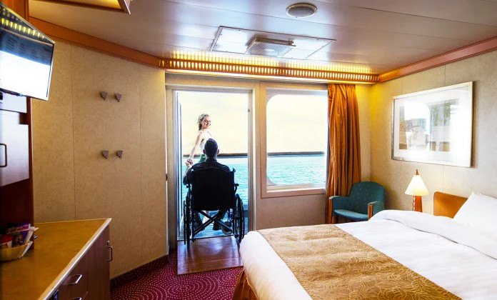

En particular, ofrecemos los siguientes servicios a petición:
En los cruceros por el Mediterráneo, ofrecemos excursiones en grupo para los pasajeros que quieren llevar un ritmo más relajado y tener más tiempo para saborear con calma los destinos más bonitos. Estas excursiones están especialmente indicadas para padres que llevan cochecitos de niño, personas de edad avanzada y todas las personas con discapacidades motoras permanentes o temporales.
Por eso nos comprometemos a reducir lo máximo posible el impacto en los destinos que visitamos junto con nuestros clientes.